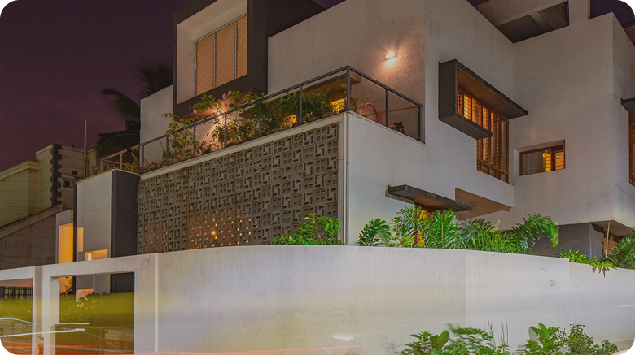

75%
Sustainable Core
We prioritize natural, renewable materials to minimize environmental impact and ensure lasting beauty and durability.
De Atelier
De Atelier focuses on creating interiors that feel refined, balanced, and complete. Every element is considered to enhance comfort, usability, and spatial experience.
.png)
We prioritize natural, renewable materials to minimize environmental impact and ensure lasting beauty and durability.
We balance sustainability with market realities to ensure financially viable, efficient, and appealing projects.

Latest Works
A curated selection of projects that reflect our design thinking and execution.

Mahadev_Residence Chic Apartment @2019
Chic Apartment @2019
Case Study
A curated collection of interior spaces shaped through detail and material understanding.
.png)
.png)
.png)
Recent Articles
Insights and reflections on interior design, architecture, and the evolving relationship between space and everyday life.
A closer look at materials, spatial details, and the evolution of design into built form.

.png)


.png)
Our living room was completely transformed! The team captured our vision perfectly and exceeded our expectations.
.png)
Professional and creative! The design process was smooth, and the results are stunning. Highly recommend their services.
.png)
Their attention to detail and commitment to quality turned our house into a home we love. Outstanding work!
Perspectives on architecture, material thinking, and evolving design approaches.
.jpg)
Posuere urna nec tincidunt praesent egestas maecenas.
Learn More.jpg)
Posuere urna nec tincidunt praesent egestas maecenas.
Learn More.jpg)
Posuere urna nec tincidunt praesent egestas maecenas.
Learn More


.jpeg)
.jpeg)

.jpeg)

.jpeg)